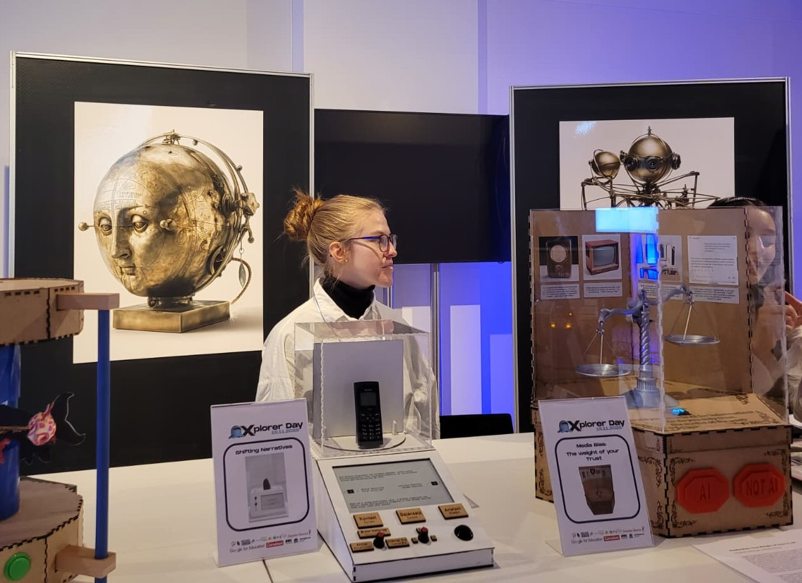
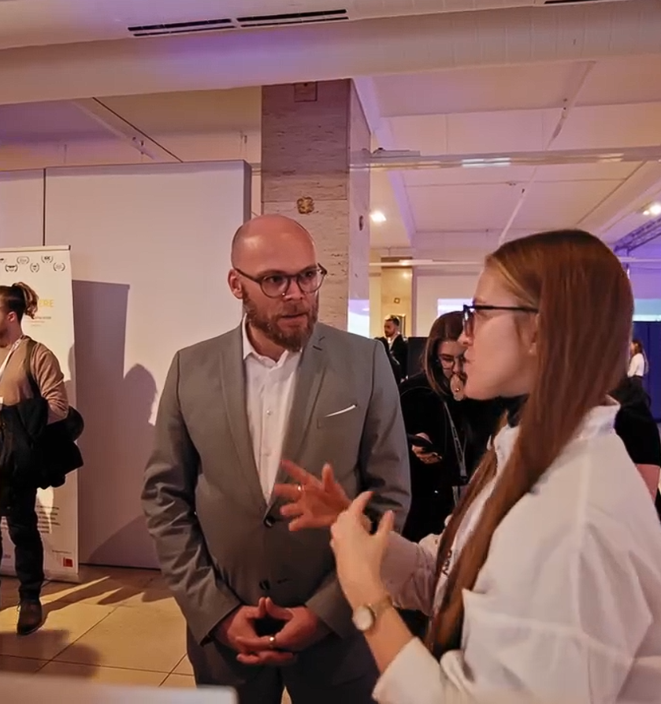
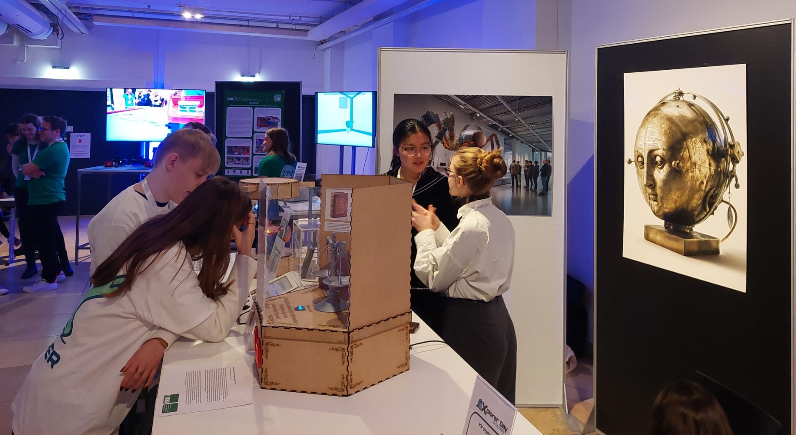
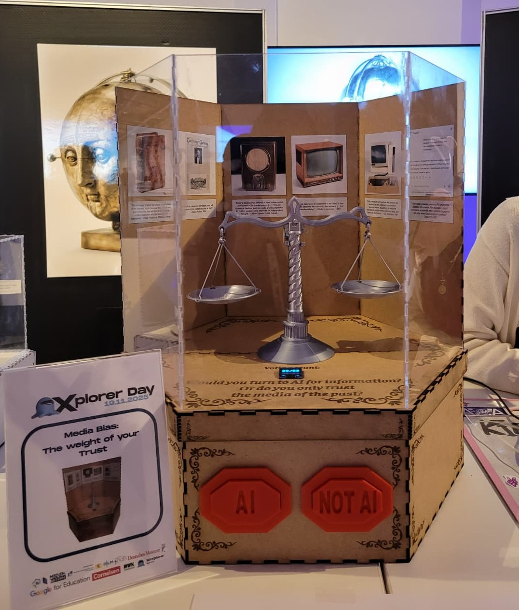

Interaction Design & Hardware Prototyping: Media Bias - The Weight of Your Trust
Concept & Vision
Duo-Project | Seminar Brief: Interactive AI-reflection in museums.
"Media Bias" explores the "Weight of Trust" - investigating how an information's medium dictates our perception of its trustworthiness. While AI faces modern skepticism, this installation reminds visitors that books, radio, and the internet once faced identical doubt. By comparing a historical media timeline with a real-time binary vote -"AI vs. Media of the Past"- the exhibit prompts visitors to deconstruct their own preconceptions and reflect on why they trust certain media more than others. A physical voting system translates abstract opinions into mechanical movement: an antique-style scale tilts in real-time, giving a tangible form to the digital debate.

Technical Implementation
Hardware Stack: Powered by a Raspberry Pi Pico W (MicroPython), using a stepper motor for precise scale tilting and an OLED display for real-time vote tracking.
Interaction Design: Visitors cast their vote via two large-scale buttons, deciding whether to trust AI as an information source. The current vote ratio is instantly visualized by the tilting scale and digital display.
Context: A curated timeline of historical quotes (Plato to Pulitzer) frames modern AI skepticism as a recurring media pattern.
Project Type: Collaborative Duo-Project with N. Menzl
Key Contributions: Concept, Hardware Programming, Interaction Design
Read Documentation (PDF)Showcase: Explorer Day @ Deutsches Museum




Developed in cooperation with the Deutsches Museum Digital, this project was featured at the Explorer Day, hosted by XR Hub Bavaria at the Deutsches Museum Munich.
The showcase allowed for direct interaction with a public audience. A highlight was presenting the hardware and concept to State Minister Dr. Fabian Mehring and discussing the role of AI in educational contexts.
Image 2 courtesy of XR HUB Bavaria